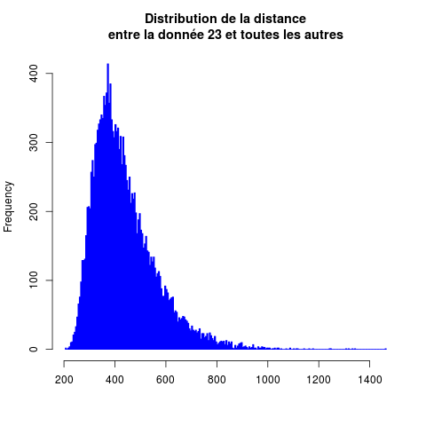
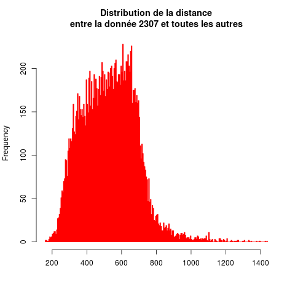
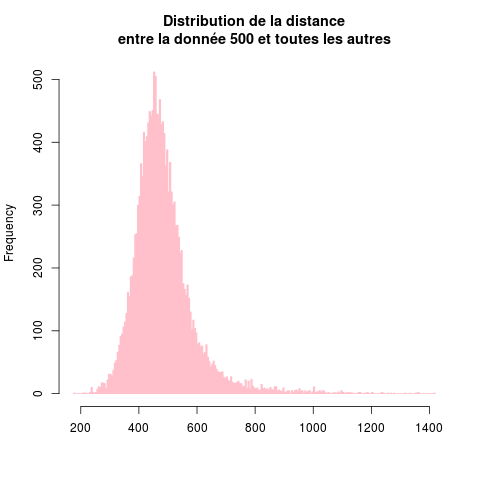
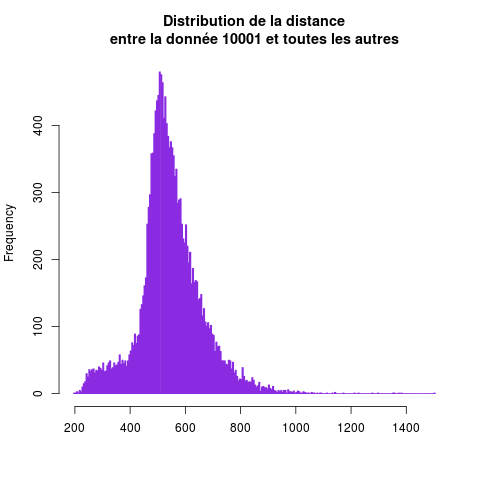

Systèmes de recommendation par le contenu
Ce TP concerne les systèmes de recommendation par le contenu. C'est-à-dire, on dispose d'un ensemble d'items, chaque item est décrit par un certain nombre d'attributs et on veut par exemple trouver les k items qui ressemblent le plus à un item fixé.
Table des matières :
Chargement et pré-traitement des données
On va s'intéresser à tous les morceaux de musique qui ont été classés parmi les 100 premiers du classement américain (US Billboard Hot 100) de 1960 à 2010.
Pour une étude récente [1], des propriétés musicales de la plupart de ces morceaux ont été analysés. Les données résultantes sont disponibles en libre accès.
Accès aux données
La source de données est le fichier situé à l'url http://figshare.com/articles/Main_Dataset_for_Evolution_of_Popular_Music_USA_1960_2010_/1309953.
- Chargez ce fichier dans R.
- Combien y a-t-il de données ?
- Combien y a-t-il d'attributs par donnée ?
- Quels sont ces attributs ? De quels types sont-ils ?
Pré-traitement
Ce jeu de données contient de nombreuses données, chacune décrite par de nombreux attributs. On a :
- recording_id est un numéro permettant d'identifier un morceau
- artist_name est le nom de l'artiste associé à ce morceau.
- artist_name_clean contient la même information mais nettoyée : si on veut trouver tous les morceaux d'un artiste donné, c'est cet attribut qu'il faut utiliser.
- track_name est le titre du morceau
- first_entry est la date d'entrée dans le classement.
- quarter est le trimestre d'entrée dans le classement.
- year est l'année d'entrée dans le classement.
- cluster : les morceaux ont été segmentés automatiquement par genres musicaux. Cet attribut est le numéro de cluster associé à un morceau. Il s'interprête comme suit :
- northern soul/soul/hip hop/dance
- hip hop/rap/gangsta rap/old school
- easy listening/country/love song/piano
- funk/blues/jazz/soul
- rock/pop/new wave
- female voice/pop/R'n'B/Motown
- country/classic country/folk/rockability
- dance/new wave/pop/electronic
- classic rock/country/rocj/singer-songwriter
- love song/slow jams/soul/folk
- funk/blues/dance/blues rock
- soul/R'n'B/funk/disco
- rock/hard rock/alternative/classic-rock
- hTopic_01..hTopic_08 sont 8 attributs décrivant des caractéristiques harmoniques des morceaux (tonalité, ...).
- tTopic_01..tTopic_08 sont 8 attributs décrivant le timbre des morceaux (percussion, calme, voix, ...).
- des tas d'attributs numériques décrivant différents caractéristiques musicales du morceau.
S'agissant d'un si gros jeu de données, il est vraiment indispensable de passer un peu de temps pour comprendre sa structure. C'est le but des questions qui suivent.
- Regardez quelques données pour comprendre ces différents champs.
- Recherchez des morceaux que vous connaissez.
- Recherchez tous les morceaux d'un artiste que vous connaissez.
Les attributs (numériques) 12 à 269 ont été générés par divers algorithmes à partir des signaux audio de chaque morceau. Ces attributs encodent différents aspects liés au style de musique (rythme, accords, ...).
La question que l'on va étudier ci-dessous est : si j'aime tel morceau de musique (présent dans ce jeu de données), quels autres morceaux de musique peut-on me recommender si je veux écouter le même genre de musique ?
Les attributs sont décrits sur la page web d'où vous avez téléchargé le jeu de données. Il est nécessaire de s'assurer que les attributs sont considérés comme il faut par R. Quand on charge des attributs de divers types, il est rare que R interprête toutes les valeurs comme on le voudrait, qu'il distingue bien les chaînes de caractères, des facteurs, des dates, ...
Assurez-vous des points suivant :
- l'attribut artist_name est une chaîne de caractères.
- l'attribut artist_name_clean est un attribut nomail (un facteur en R)
- l'attribut track_name est une chaîne de caractères.
- l'attribut first_entry est une date. Modifiez cet attribut pour que ce soit une véritable date et non une chaîne de caractères qui ressemble à une date.
- l'attribut quarter contient l'année et le trimestre. L'année est déjà présente dans le champ year. Aussi, modifiez cet attribut pour qu'il ne contienne que le numéro du trimestre.
Exploration du jeu de données
Avant d'étudier le problème qui nous intéresse ici, il faut toujours commencer par passer un peu de temps à regarder le jeu de données. Cela passe souvent par la réalisation de graphiques, leur observation et leur interprêtation.
- on s'intéresse à la répartition du nombre de morceaux différents par année. Commencez par faire un graphique du nombre de morceaux entrés par année.
Un autre moyen pour la visualiser est de réaliser un histogramme.
Faites un histogramme de l'attribut year ; qu'observez-vous ? Comment interprêtez-vous cela ?
- Y a-t-il des mois pendant lesquels il y a systématiquement plus, ou moins, d'entrées dans le classement ? Cela évolue-t-il au cours du temps ?
- Même question pour les trimestres.
- On s'intéresse à l'évolution de la popularité des genres musicaux. Pour cela, on va faire des graphiques représentation le nombre de morceaux d'un genre donné (caractérisé par l'attribut cluster) au fil du temps.
Faire un tel graphe en comptant le nombre de morceaux du cluster 1 (par exemple, prenez le cluster qui vous plaît) présent dans le classement durant chaque année.
- Faites de même pour chaque trimestre.
- Faites ce graphique pour les 13 clusters en associant une couleur différente à chaque cluster. Examinez ce graphique quant à l'évolution des genres les plus populaires au fil des années.
- On va s'intéresser à la popularité des artistes. Pour cela, pour chaque artiste, on compte le nombre de morceaux qu'il a eu dans les classements.
Quel est l'artiste qui a eu le plus de morceaux dans ce classement ?
Quels sont les artistes qui ont eu plus de 30 morceaux dans ce classement ?
- Calculez le nombre d'artistes ayant eu n morceaux dans ce classement, pour n variant de 1 à la valeur maximale trouvée à la question précédente. Appelons decompte le vecteur dont le i-ème élément contient le nombre d'atrtistes ayant eu i morceaux dans ce classement.
- Faites un plot de decompte.
- Faites un plot log-log, c'est-à-dire qu'en abscisses et en ordonnées, vous mettez le log de la quantité que vous avez mise dans le plot précédent. Vous devez obtenir une figure assez remarquable.
Recommendation
Décrit par plus de 250 attributs numériques, chaque morceau de musique peut être vu comme un point dans un espace géométrique ayant plus de 250 dimensions.
Dans cet espace, on peut considérer la distance euclidienne et déterminer les points/items les plus proches d'un item donné.
- Avant d'aborder la recommendation, on s'intéresse d'abord à la distance séparant un morceau des autres morceaux. Pour un morceau donné, on va calculer sa distance à chacun des autres. On peut faire cela à l'aide d'une boucle. Vu le nombre de données, c'est assez long de calculer cette distance à chacun des autres morceaux. C'est un très bon exercice de le faire ; ne soyez pas surpris par le temps que prend le calcul. Vous prendrez une donnée quelconque (numéro i) et vous calculez sa distance à toutes les autres données. Vous utilisez les attributs numérotés 12 à 269 qui sont tous numériques.
- On va plutôt utiliser une fonction qui fait ce calcul de manière très efficace. Pour cela, il faut installer un paquet dénommé FNN. Faites :
install.packages ("FNN")
Une fois installé, vous devrez le charger pour pouvoir utiliser la fonction knn() qui y est définie.
knn() détermine la classe d'une donnée à partir de celle de ses k plus proches voisins. Pour cela, knn() calcule la distance entre 1 point et tous les autres. C'est cela qui nous intéresse ici ; on ne veut pas déterminer la classe d'une donnée, mais juste calculer ces distances.
L'utilisation de knn() est très simple :
> distance.a.toutes.les.donnees <- knn (toutes.les.données, la.donnée.qui.nous.intéresse, factor (c (rep (0, nrow (toutes.les.données)))), k = nrow (toutes.les.données))
Cela renvoie un objet qui contient différentes informations. En particulier, attr (distance.a.toutes.les.donnees, "nn.dist") contient la distance entre chacune des données contenue dans toutes.les.données et la.donnée.qui.nous.intéresse. Vous pouvez en faire un histogramme. Ça doit vous donner quelque chose qui ressemble à ça :




Qu'en pensez-vous ? Pensez-vous que ces distributions soient normales ?
Les k plus proches voisins
Pour déterminer les k plus proches voisins, on spécifie simplement la valeur du paramètre k dans l'appel à knn(). Précédemment, on avait spécifié le nombre de données pour obtenir la distance à toutes les données.
Par exemple, pour les 10 plus proches voisins, on aurait :
> k.plus.proches.voisins <- knn (toutes.les.données, la.donnée.qui.nous.intéresse, factor (c (rep (0, nrow (toutes.les.données)))), k = 10)
Ensuite,
> attr (k.plus.proches.voisins, "nn.index")
fournit l'indice des k plus proches voisins.
Sélection d'items
Si l'on veut recommender des morceaux à quelqu'un qui aime un morceau en particlier, il suffit de rechercher ce morceau dans les données, de déterminer ces plus proches et de les proposer.
- Recherchez des morceaux que vous connaissez qui se trouvent dans le jeu de données.
- Pour chacun, déterminez ces 5 plus proches voisins. Cette sélection vous statisfait-elle ?
En réalité, en général, on dispose d'une liste de morceaux qui ont été écoutés.
Cette question n'est pas facile. Elle nécessite de la réflexion...
Vous disposez d'une liste d'écoute d'un utilisateur. Quels items recommendez-vous à partir de cette liste ?
Pour donner quelques exemples, voici quelques listes d'écoutes deplusieurs utilisateurs. Quelles recommendations faites-vous ?
- c (140, 315, 319, 454)
- c (319, 147, 9376, 1842, 153)
- c (16333, 16164, 14925, 3319)
- c (140, 315, 319, 454, 1021, 10179, 16261, 269, 504, 9153)
Référence
[1] Mauch M., MacCallum RM, Levy M, Leroi AM. 2015 The evolution of popular music USA 1960-2010. R.Soc. open sci. 2:150081.